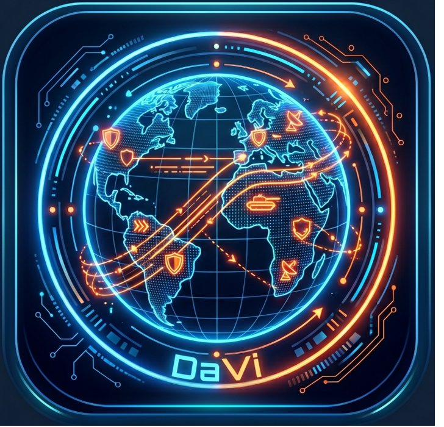

TDP // DataViewer
DaVi
Map Source
Imagery Provider
Ion · Aerial with Labels (Bing)
Ion · Aerial (Bing)
Ion · Road (Bing)
JCRSD Planet (vector, OSM)
Natural Earth II (local, bundled)
Custom TMS URL
Custom WMTS URL Template
Cesium Ion Token
URL
Apply Map Source
Index Scanner
Scan All Indexes
KEYWORD FILTER
SCAN ALL DOCUMENTS
(slower)
AUTO-RESCAN
Off
Every 1 min
Every 5 min
Every 10 min
Every 30 min
Index Browser
Browse Indexes
PostgreSQL Tables
Scan PG Tables
Browse
Plot PG Tables on Globe
Other ISAK Tools
Scan Tools
Browse
Plot Tool Datasets on Globe
Manual Override
▶
Selected Index
Select All Visible
Clear Selection
Latitude Field
Longitude Field
Label Field (optional)
Plot on Globe
Clear Points
Local File Upload
Plot a .slf / .kml / .kmz / .csv / .xml / .json file without Elasticsearch.
Tip: drag & drop directly onto the map.
Clear Loaded File
Live Feed
Poll Interval
Every 10 seconds
Every 30 seconds
Every 60 seconds
Every 5 minutes
Timestamp Field (optional)
LIVE FEED
OFF
LIVE EVENTS
ALL TRAILS
CLEAR REVIEW
ACK ALL
No new events.
Ready.
0
POINTS
-
INDEX
Open Index Docs
×
Snail Trail
KEYWORD MATCHES
✕ CLOSE
Double-click a row to open the full document
▲ PLOT ALL
DOCUMENT
✕ CLOSE